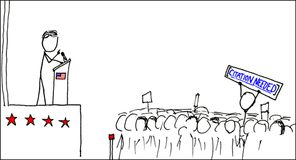

Hey! I'm Milo Friboquenn and I'm a wikimedian, free software hacker and photographer.
I like: GNU/Linux ,Programming, creating a osu! beatmaps, 80's music and photography
Current hyperfixations: The Capitan of Her Heart (Yes, I know this music is one-hit wonder)
Website made with Neovim.